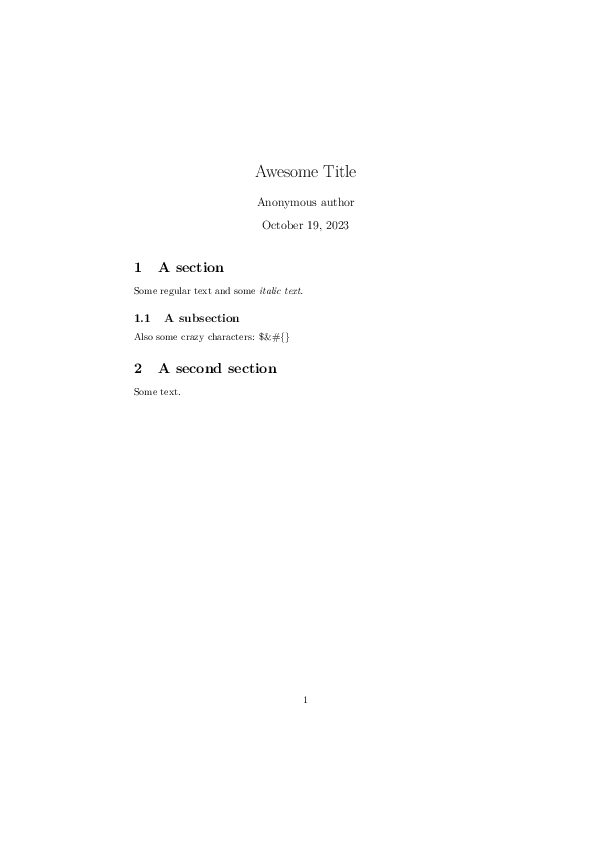
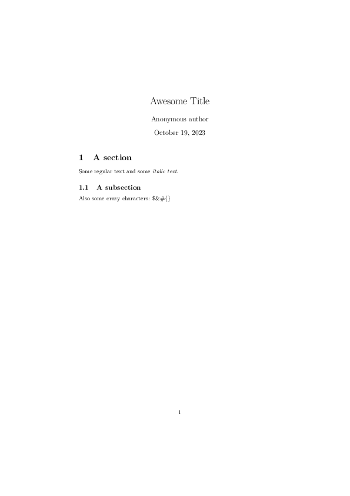
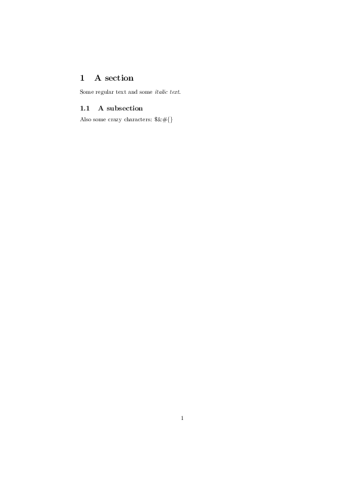

Basic example¶
This example shows basic document generation functionality.
-
fill_document(doc)[source]¶ Add a section, a subsection and some text to the document.
Parameters: doc ( pylatex.document.Documentinstance) – the document
The code¶
from pylatex import Command, Document, Section, Subsection
from pylatex.utils import NoEscape, italic
def fill_document(doc):
"""Add a section, a subsection and some text to the document.
:param doc: the document
:type doc: :class:`pylatex.document.Document` instance
"""
with doc.create(Section("A section")):
doc.append("Some regular text and some ")
doc.append(italic("italic text. "))
with doc.create(Subsection("A subsection")):
doc.append("Also some crazy characters: $&#{}")
if __name__ == "__main__":
# Basic document
doc = Document("basic")
fill_document(doc)
doc.generate_pdf(clean_tex=False)
doc.generate_tex()
# Document with `\maketitle` command activated
doc = Document()
doc.preamble.append(Command("title", "Awesome Title"))
doc.preamble.append(Command("author", "Anonymous author"))
doc.preamble.append(Command("date", NoEscape(r"\today")))
doc.append(NoEscape(r"\maketitle"))
fill_document(doc)
doc.generate_pdf("basic_maketitle", clean_tex=False)
# Add stuff to the document
with doc.create(Section("A second section")):
doc.append("Some text.")
doc.generate_pdf("basic_maketitle2", clean_tex=False)
tex = doc.dumps() # The document as string in LaTeX syntax
The generated files¶
basic_maketitle2.tex¶
1 2 3 4 5 6 7 8 9 10 11 12 13 14 15 16 17 18 19 20 21 22 23 24 25 26 27 28 29 | \documentclass{article}% \usepackage[T1]{fontenc}% \usepackage[utf8]{inputenc}% \usepackage{lmodern}% \usepackage{textcomp}% \usepackage{lastpage}% % \title{Awesome Title}% \author{Anonymous author}% \date{\today}% % \begin{document}% \normalsize% \maketitle% \section{A section}% \label{sec:Asection}% Some regular text and some % \textit{italic text. }% \subsection{A subsection}% \label{subsec:Asubsection}% Also some crazy characters: \$\&\#\{\} % \section{A second section}% \label{sec:Asecondsection}% Some text. % \end{document} |
basic_maketitle2.pdf

basic_maketitle.tex¶
1 2 3 4 5 6 7 8 9 10 11 12 13 14 15 16 17 18 19 20 21 22 23 24 | \documentclass{article}% \usepackage[T1]{fontenc}% \usepackage[utf8]{inputenc}% \usepackage{lmodern}% \usepackage{textcomp}% \usepackage{lastpage}% % \title{Awesome Title}% \author{Anonymous author}% \date{\today}% % \begin{document}% \normalsize% \maketitle% \section{A section}% \label{sec:Asection}% Some regular text and some % \textit{italic text. }% \subsection{A subsection}% \label{subsec:Asubsection}% Also some crazy characters: \$\&\#\{\} % \end{document} |
basic_maketitle.pdf

basic.tex¶
1 2 3 4 5 6 7 8 9 10 11 12 13 14 15 16 17 18 19 20 21 | \documentclass{article}% \usepackage[T1]{fontenc}% \usepackage[utf8]{inputenc}% \usepackage{lmodern}% \usepackage{textcomp}% \usepackage{lastpage}% % % % \begin{document}% \normalsize% \section{A section}% \label{sec:Asection}% Some regular text and some % \textit{italic text. }% \subsection{A subsection}% \label{subsec:Asubsection}% Also some crazy characters: \$\&\#\{\} % \end{document} |
basic.pdf
